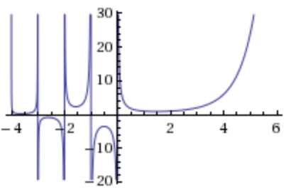

| $$ \begin{align} -\frac53\Gamma(-5/3)&=\Gamma(-2/3) \\ -\frac23\Gamma(-2/3)&=\Gamma(1/3) \end{align} $$ | $$ \begin{align} \qquad&\Rightarrow\qquad \\ \quad \\ \qquad&\Rightarrow\qquad \end{align} $$ | $$ \begin{align} \Gamma(-5/3)&=-\frac35\Gamma(-2/3) \\ \Gamma(-2/3)&=-\frac32\Gamma(1/3) \end{align} $$ |
